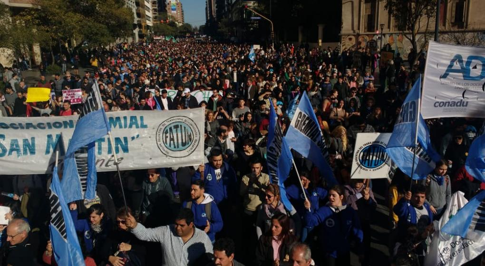

Desde las 15, docentes, estudiantes y otras organizaciones se movilizaban desde el Portal de la Reforma -en el ingreso a Ciudad Universitaria por bulevar Chacabuco- hasta la plaza Agustín Tosco -explaza Vélez Sársfield-, en reclamo de mejoras condiciones salariales y en defensa de la educación pública.

El reclamo tiene el aval de las autoridades universitarias, incluido el rector de la Universidad Nacional de Córdoba (UNC), Hugo Juri. La marcha se presenta bajo el lema "la universidad está en peligro".
En comunicación con Canal 10, Javier Blanco, secretario general de la Asociación de Docentes e Investigadores Universitarios de Córdoba (Adiuc), afirmó: "En esta reunión pusimos en común la situación crítica que vive la UNC y las universidades nacionales en general con las paritarias irresueltas de docentes y no docentes y con el recorte presupuestario que está afectando a todas las universidades".